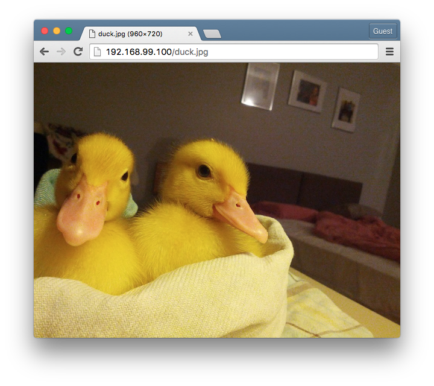

Kubernetes' new init containers feature is more powerful than Docker's --volumes-from option
Often, containerized applications depend on a list of initialization steps to be performed before they can carry out their functions. In fact, most non-trivial applications would. These steps may include such things as downloading and seeding applications with data, fetching remote configurations or pre-loading existing database snapshots.
Consider the simple case of running a nginx container with the official Docker image:
$ docker run -d -p 80:80 nginx
This will host the generic nginx welcome page at http://$(docker-machine ip):80/. But what if what if we wanted a quick way to host some static files or pictures of say, adorable baby ducks for our friends? We'd simply need to to pre-populate the /usr/share/nginx/html with said adorable duck images. Without modifying the entrypoint/command and/or creating another image based on nginx (which is definitely the wrong approach in the case), we can just mount a data volume container to the nginx container, and have another busybox container pre-populate the data volume container with the pictures.

The adorable baby ducks under examination. Visit /r/duck for more!
Using Docker (Compose) 'volumes from'
Using Docker Compose, this looks like:
version: '2' services: init: image: busybox command: wget -O /usr/share/nginx/html/duck.jpg http://i.imgur.com/Yy3hrM1.jpg volumes: - /usr/share/nginx/html nginx: image: nginx depends_on: - init volumes_from: - init ports: - "80:80"
The volumes_from option (--volumes-from in docker run) mounts the directories from the specified data volume containers (in this case init), which downloads and saves the image to /usr/share/nginx/html/.
$ docker-compose up Starting desktop_init_1 Starting desktop_nginx_1 Attaching to desktop_init_1, desktop_nginx_1 init_1 | Connecting to i.imgur.com (103.245.222.193:80) init_1 | duck.jpg 100% |*******************************| 134k 0:00:00 ETA init_1 | desktop_init_1 exited with code 0 nginx_1 | 192.168.99.1 - - [25/Aug/2016:07:08:57 +0000] "GET /duck.jpg HTTP/1.1" 200 137479 "-" "Mozilla/5.0 (Macintosh; Intel Mac OS X 10_11_5) AppleWebKit/537.36 (KHTML, like Gecko) Chrome/51.0.2704.106 Safari/537.36" "-"
You should now be able to see said ducks at http://$(docker-machine ip):80/duck.jpg.
Using Kubernetes 'init containers'
.spec.template.metadata.annotations
pod.alpha.kubernetes.io/init-containers
nginx-deployment.yaml
apiVersion: extensions/v1beta1 kind: Deployment metadata: labels: run: nginx name: nginx spec: replicas: 1 selector: matchLabels: run: nginx template: metadata: labels: run: nginx annotations: pod.alpha.kubernetes.io/init-containers: '[ { "name": "init", "image": "busybox", "command": [ "wget", "-O", "/data/duck.jpg", "http://i.imgur.com/Yy3hrM1.jpg" ], "volumeMounts": [ { "name": "data", "mountPath": "/data" } ] } ]' spec: containers: - image: nginx name: nginx ports: - containerPort: 80 volumeMounts: - name: data mountPath: /usr/share/nginx/html volumes: - name: data emptyDir: {}
Comments
Comments powered by Disqus